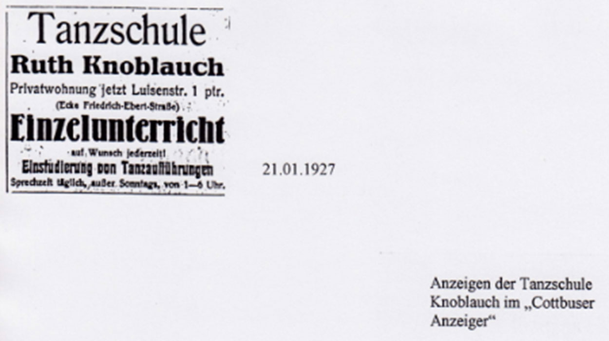

1927

Die Gründung
Ruth Knoblauch eröffnet im Januar ihre eigene Tanzschule in Cottbus und wird Mitglied im ADTV.
in Bewegung
1927 — 2027
Eine Geschichte, die Generationen verbindet.
UNSERE GESCHICHTE
Seit 1927 gehört die Tanzschule Fritsche zur Cottbuser Tanzgeschichte.
Ruth Knoblauch eröffnet im Januar ihre eigene Tanzschule in Cottbus und wird Mitglied im ADTV.
Durch die Heirat mit Fritz Fritsche wird der Name Fritsche Teil der Geschichte der Tanzschule.
Sohn Dieter Fritsche wird geboren und begleitet schon als Kind seine Mutter zu den Tanzkursen.
Während des Zweiten Weltkriegs wird der Tanzunterricht durch das geltende Vergnügungsverbot eingestellt. Nach Kriegsende erlebt der Tanzunterricht einen großen Aufschwung.
Dieter Fritsche beginnt, sich intensiv mit Tanzschritten, Figuren und Bewegungsabläufen zu beschäftigen.
Nach seiner Führerscheinprüfung fährt Dieter Ruth Fritsche zu ihren Tanzstunden in Cottbus und Umgebung.
Die Zentrale Arbeitsgemeinschaft der Lehrer für Gesellschaftstanz wird gegründet und ermöglicht wieder die Ausbildung von Tanzlehrern.
Nach einem Lehrgang in Jena besteht Dieter Fritsche erfolgreich die Prüfung zum Tanzlehrer-Assistenten.
Dieter Fritsche besteht im Februar die Prüfung zum Lehrer für Gesellschaftstanz und ist zeitweise der jüngste Tanzlehrer der DDR.
Nach ihrer Hochzeit in Budapest kommt Erzsébet nach Cottbus und beginnt, aktiv im Tanzunterricht und Tanztraining mitzuwirken.
Nach langen Auseinandersetzungen mit den Behörden übernimmt Dieter Fritsche die Tanzschule offiziell unter seinem eigenen Namen und führt sie gemeinsam mit Erzsébet weiter.
Erzsébet Fritsche schließt ihre Ausbildung zur Tanzlehrerin an der Tanzschule Graf in Dresden erfolgreich ab.
Eigene feste Tanzsäle sind selten. Der Unterricht findet deshalb in verschiedenen angemieteten Räumen statt. Neben Jugendkursen wächst das Angebot für Erwachsene.
Mit der politischen Wende werden die Tanzlehrer der DDR in den ADTV aufgenommen. Das Unterrichtsangebot kann erweitert und am Welttanzprogramm ausgerichtet werden.
In der Rudolf-Breitscheid-Straße 11 entsteht die erste feste Heimstatt der Tanzschule. Das Angebot wächst um Kindertanz, Spezialkurse und Turniertanz.
Am 6. Februar gründen Dieter Fritsche und tanzbegeisterte Paare den Tanzclub ’91 Cottbus e. V.
Cornelia „Conny“ Fritsche beginnt ihre dreijährige Ausbildung zur ADTV-Tanzlehrerin in Berlin.
Nach bestandener Prüfung zur ADTV-Tanzlehrerin tritt Conny Fritsche in die elterliche Tanzschule ein.
Ab 1998 werden auch in Cottbus moderne Choreografien zu aktueller Popmusik trainiert – mit Elementen aus Hip-Hop, Jazz, Streetdance und Breakdance.
Die Tanzschule feiert ihr 80-jähriges Bestehen – 80 Jahre Tanzgeschichte, Leidenschaft und unzählige Menschen, die das Tanzen miteinander verbunden hat.

Am 11. Juli findet die symbolische Staffelstab-Übergabe der Tanzschule statt. Ein neuer Abschnitt beginnt.

Ein Jahrhundert Tanzgeschichte – 100 Jahre voller Musik, Bewegung, Leidenschaft und gemeinsamer Momente.
EIN JAHRHUNDERT
100 Jahre Leidenschaft, Musik, Bewegung und gemeinsame Erinnerungen.
UNSERE ERINNERUNGEN
100 Jahre Tanzschule sind mehr als eine Zahl. Es sind Menschen, Begegnungen und unvergessliche Momente.

Und die Geschichte geht weiter …